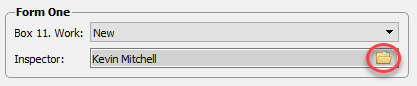
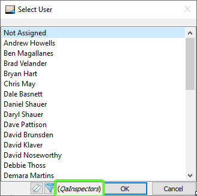
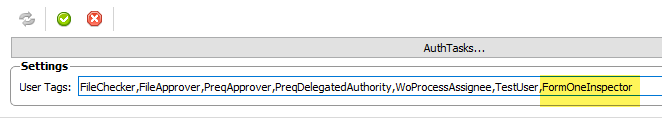
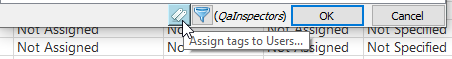
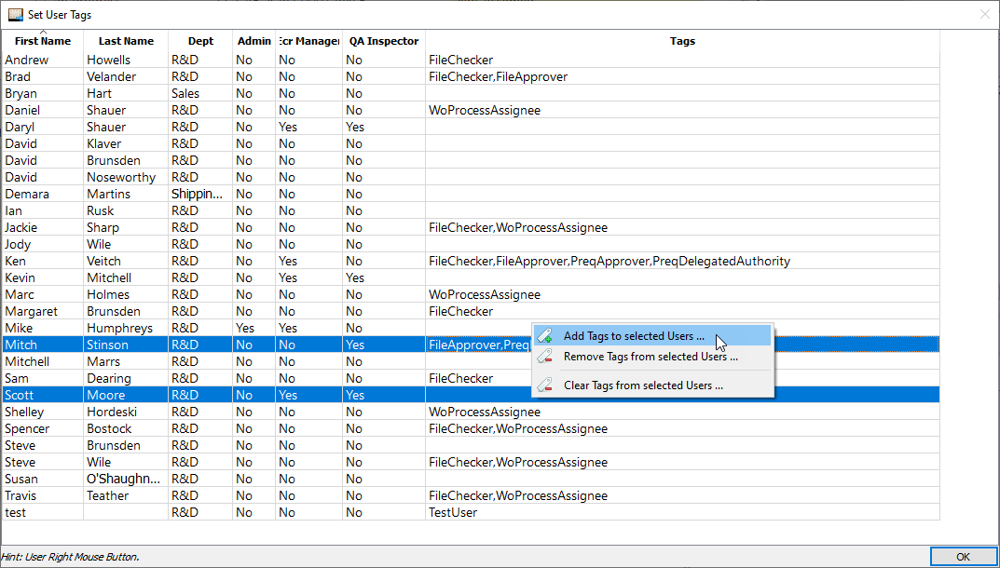
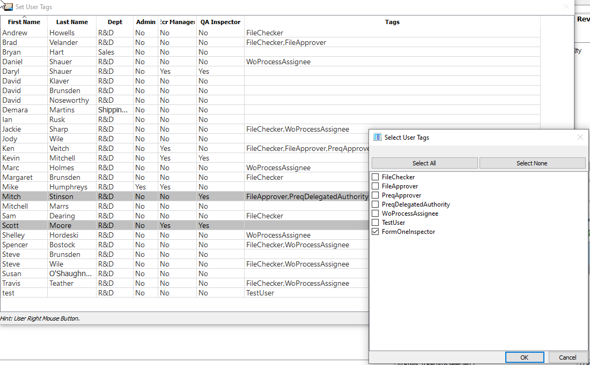
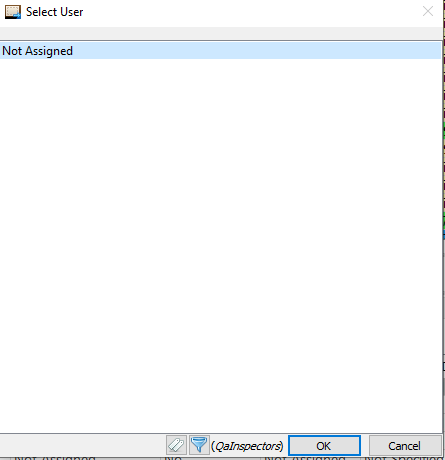
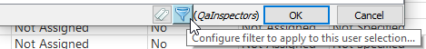
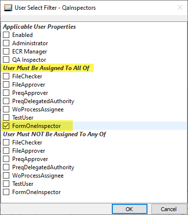
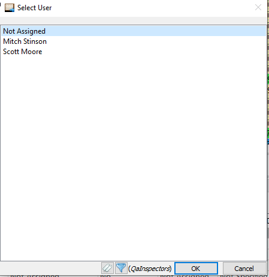

User Select Filters
Since v0.28, AppCOM allows User selection lists to be filtered in order to limit the Users that can be assigned to any particular field.
Example
Let's use the selection of a Work Order's Form One Inspector as an example of how to limit the Users that can be selected as the Form One Inspector.

When the Select User dialog is opened, notice the Filter Name QaInspectors is specified. This means "Only Users that match the QaInspectors filter criteria will be displayed in this dialog".
A Filter Name is programmed into AppCOM for most User Select dialogs.

Set Filter Criteria
The basic steps are as follows:
- (Optional) Create a new User Tag that can be assigned to users.
- (Optional) Assign the new User Tag to any users you want to be included in the selection.
- Set filter criterion, including optionally assigning the new User Tag to the User Select control's filter.
Create User Tag
Do this only if the user select dialog warrants finer control over the selection of users. In many cases, existing tags can be used, or simply just specifying a set of user properties is sufficient.
In the AppCOM Settings Manager - Authorization - User Settings panel, create a new User Tag called FormOneInspector (the name doesn't really matter, but should be unique and descriptive).
This tag will be assigned to the Users that can be selected as Form One Inspectors and applied to the User selection control.

Note
Make sure to not leave spaces between tags.
Make sure to save your changes (green check mark).
Assign User Tag to Users
Go back to the Work Order form and open the Inspector User Select dialog:
Next, click on the User Tags button:

Select the Users to whom you want to assign the tag, then right click and select Add Tags to selected Users...

The Select User Tags dialog will open. Check the the FormOneInspector tag we created earlier.

When you close the dialog, you'll notice the Select User list is empty. We have to apply the tag to the Inspector User Select dialog.

Assign Tag to Filter
Click on the Filter button:

In the User Select Filter dialog, check the the FormOneInspector tag in the User Muts Be Assigned To All Of section:

After closing the dialog, you'll notice only Users that have been assigned the tag are displayed.

Extra Info
- User Filters are global in nature.
- Filters can be modified only by AppCOM Administrators or Users that have been assigned the
UserSelectFilterspermission.
Under The Hood
- The User Filters are stored in the database table
appcom.user_select_filters. - The User Select dialog is implemented in
AppCOM\src\ac2data\widgets\userselect-widget.cpp.